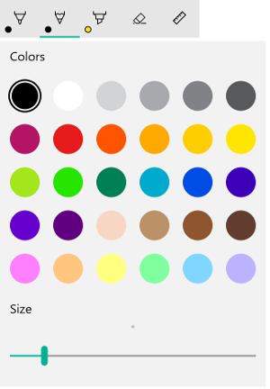
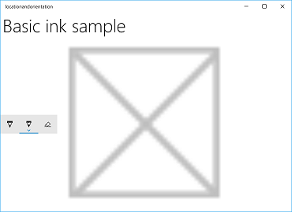
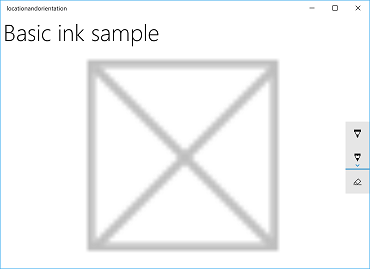
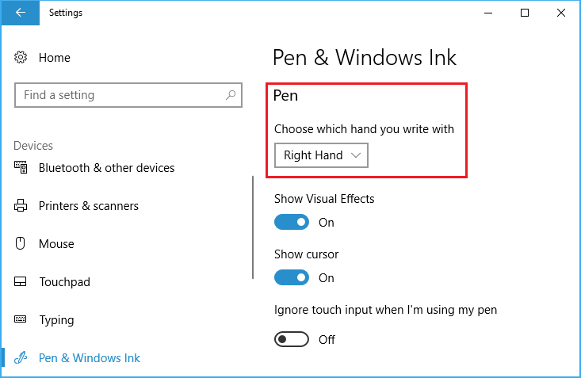
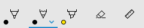
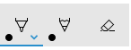
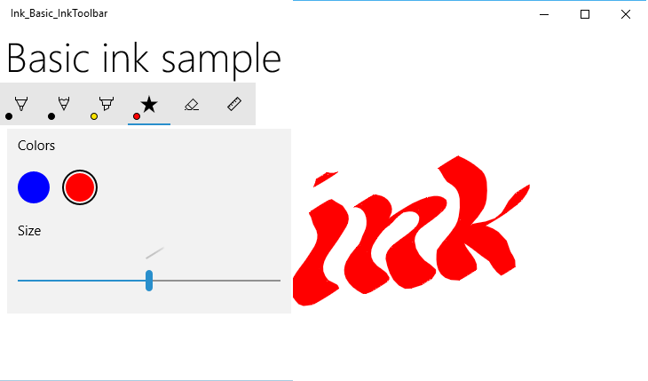

Add an InkToolbar to a Windows app
There are two different controls that facilitate inking in Windows apps: InkCanvas and InkToolbar.
The InkCanvas control provides basic Windows Ink functionality. Use it to render pen input as either an ink stroke (using default settings for color and thickness) or an erase stroke.
For InkCanvas implementation details, see Pen and stylus interactions in Windows apps.
As a completely transparent overlay, the InkCanvas does not provide any built-in UI for setting ink stroke properties. If you want to change the default inking experience, let users set ink stroke properties, and support other custom inking features, you have two options:
In code-behind, use the underlying InkPresenter object bound to the InkCanvas.
The InkPresenter APIs support extensive customization of the inking experience. For more detail, see Pen and stylus interactions in Windows apps.
Bind an InkToolbar to the InkCanvas. By default, the InkToolbar provides a customizable and extensible collection of buttons for activating ink-related features such as stroke size, ink color, and pen tip.
We discuss the InkToolbar in this topic.
Important APIs: InkCanvas class, InkToolbar class, InkPresenter class, Windows.UI.Input.Inking
Default InkToolbar
By default, the InkToolbar includes buttons for drawing, erasing, highlighting, and displaying a stencil (ruler or protractor). Depending on the feature, other settings and commands, such as ink color, stroke thickness, erase all ink, are provided in a flyout.

Default Windows Ink toolbar
To add a default InkToolbar to an inking app, just place it on the same page as your InkCanvas and associate the two controls.
- In MainPage.xaml, declare a container object (for this example, we use a Grid control) for the inking surface.
- Declare an InkCanvas object as a child of the container. (The InkCanvas size is inherited from the container.)
- Declare an InkToolbar and use the TargetInkCanvas attribute to bind it to the InkCanvas.
Note
Ensure the InkToolbar is declared after the InkCanvas. If not, the InkCanvas overlay renders the InkToolbar inaccessible.
<Grid Background="{ThemeResource ApplicationPageBackgroundThemeBrush}">
<Grid.RowDefinitions>
<RowDefinition Height="Auto"/>
<RowDefinition Height="*"/>
</Grid.RowDefinitions>
<StackPanel x:Name="HeaderPanel" Orientation="Horizontal" Grid.Row="0">
<TextBlock x:Name="Header"
Text="Basic ink sample"
Style="{ThemeResource HeaderTextBlockStyle}"
Margin="10,0,0,0" />
</StackPanel>
<Grid Grid.Row="1">
<Image Source="Assets\StoreLogo.png" />
<InkCanvas x:Name="inkCanvas" />
<InkToolbar x:Name="inkToolbar"
VerticalAlignment="Top"
TargetInkCanvas="{x:Bind inkCanvas}" />
</Grid>
</Grid>
Basic customization
In this section, we cover some basic Windows Ink toolbar customization scenarios.
Specify location and orientation
When you add an ink toolbar to your app, you can accept the default location and orientation of the toolbar or set them as required by your app or user.
XAML
Explicitly specify the location and orientation of the toolbar through its VerticalAlignment, HorizontalAlignment, and Orientation properties.
| Default | Explicit |
|---|---|
 |
 |
| Windows Ink toolbar default location and orientation | Windows Ink toolbar explicit location and orientation |
Here's the code for explicitly setting the location and orientation of the ink toolbar in XAML.
<InkToolbar x:Name="inkToolbar"
VerticalAlignment="Center"
HorizontalAlignment="Right"
Orientation="Vertical"
TargetInkCanvas="{x:Bind inkCanvas}" />
Initialize based on user preferences or device state
In some cases, you might want to set the location and orientation of the ink toolbar based on user preference or device state. The following example demonstrates how to set the location and orientation of the ink toolbar based on the left or right-hand writing preferences specified through Settings > Devices > Pen & Windows Ink > Pen > Choose which hand you write with.

Dominant hand setting
You can query this setting through the HandPreference property of Windows.UI.ViewManagement and set the HorizontalAlignment based on the value returned. In this example, we locate the toolbar on the left side of the app for a left-handed person and on the right side for a right-handed person.
Download this sample from Ink toolbar location and orientation sample (basic)
public MainPage()
{
this.InitializeComponent();
Windows.UI.ViewManagement.UISettings settings =
new Windows.UI.ViewManagement.UISettings();
HorizontalAlignment alignment =
(settings.HandPreference ==
Windows.UI.ViewManagement.HandPreference.LeftHanded) ?
HorizontalAlignment.Left : HorizontalAlignment.Right;
inkToolbar.HorizontalAlignment = alignment;
}
Dynamically adjust to user or device state
You can also use binding to look after UI updates based on changes to user preferences, device settings, or device states. In the following example, we expand on the previous example and show how to dynamically position the ink toolbar based on device orientation using binding, a ViewMOdel object, and the INotifyPropertyChanged interface.
Download this sample from Ink toolbar location and orientation sample (dynamic)
First, let's add our ViewModel.
Add a new folder to your project and call it ViewModels.
Add a new class to the ViewModels folder (for this example, we called it InkToolbarSnippetHostViewModel.cs).
Note
We used the Singleton pattern as we only need one object of this type for the life of the application
Add
using System.ComponentModelnamespace to the file.Add a static member variable called instance, and a static read only property named Instance. Make the constructor private to ensure this class can only be accessed via the Instance property.
Note
This class inherits from INotifyPropertyChanged interface, which is used to notify clients, typically binding clients, that a property value has changed. We'll be using this to handle changes to the device orientation (we'll expand this code and explain further in a later step).
using System.ComponentModel; namespace locationandorientation.ViewModels { public class InkToolbarSnippetHostViewModel : INotifyPropertyChanged { private static InkToolbarSnippetHostViewModel instance; public static InkToolbarSnippetHostViewModel Instance { get { if (null == instance) { instance = new InkToolbarSnippetHostViewModel(); } return instance; } } } private InkToolbarSnippetHostViewModel() { } }Add two bool properties to the InkToolbarSnippetHostViewModel class: LeftHandedLayout (same functionality as the previous XAML-only example) and PortraitLayout (orientation of the device).
Note
The PortraitLayout property is settable and includes the definition for the PropertyChanged event.
public bool LeftHandedLayout { get { bool leftHandedLayout = false; Windows.UI.ViewManagement.UISettings settings = new Windows.UI.ViewManagement.UISettings(); leftHandedLayout = (settings.HandPreference == Windows.UI.ViewManagement.HandPreference.LeftHanded); return leftHandedLayout; } } public bool portraitLayout = false; public bool PortraitLayout { get { Windows.UI.ViewManagement.ApplicationViewOrientation winOrientation = Windows.UI.ViewManagement.ApplicationView.GetForCurrentView().Orientation; portraitLayout = (winOrientation == Windows.UI.ViewManagement.ApplicationViewOrientation.Portrait); return portraitLayout; } set { if (value.Equals(portraitLayout)) return; portraitLayout = value; PropertyChanged?.Invoke(this, new PropertyChangedEventArgs("PortraitLayout")); } }
Now, let's add a couple of converter classes to our project. Each class contains a Convert object that returns an alignment value (either HorizontalAlignment or VerticalAlignment).
Add a new folder to your project and call it Converters.
Add two new classes to the Converters folder (for this example, we call them HorizontalAlignmentFromHandednessConverter.cs and VerticalAlignmentFromAppViewConverter.cs).
Add
using Windows.UI.Xamlandusing Windows.UI.Xaml.Datanamespaces to each file.Change each class to
publicand specify that it implements the IValueConverter interface.Add the Convert and ConvertBack methods to each file, as shown here (we leave the ConvertBack method unimplemented).
- HorizontalAlignmentFromHandednessConverter positions the ink toolbar to the right side of the app for right-handed users and to the left side of the app for left-handed users.
using System; using Windows.UI.Xaml; using Windows.UI.Xaml.Data; namespace locationandorientation.Converters { public class HorizontalAlignmentFromHandednessConverter : IValueConverter { public object Convert(object value, Type targetType, object parameter, string language) { bool leftHanded = (bool)value; HorizontalAlignment alignment = HorizontalAlignment.Right; if (leftHanded) { alignment = HorizontalAlignment.Left; } return alignment; } public object ConvertBack(object value, Type targetType, object parameter, string language) { throw new NotImplementedException(); } } }- VerticalAlignmentFromAppViewConverter positions the ink toolbar to the center of the app for portrait orientation and to the top of the app for landscape orientation (while intended to improve usability, this is just an arbitrary choice for demonstration purposes).
using System; using Windows.UI.Xaml; using Windows.UI.Xaml.Data; namespace locationandorientation.Converters { public class VerticalAlignmentFromAppViewConverter : IValueConverter { public object Convert(object value, Type targetType, object parameter, string language) { bool portraitOrientation = (bool)value; VerticalAlignment alignment = VerticalAlignment.Top; if (portraitOrientation) { alignment = VerticalAlignment.Center; } return alignment; } public object ConvertBack(object value, Type targetType, object parameter, string language) { throw new NotImplementedException(); } } }
Now, open the MainPage.xaml.cs file.
- Add
using using locationandorientation.ViewModelsto the list of namespaces to associate our ViewModel. - Add
using Windows.UI.ViewManagementto the list of namespaces to enable listening for changes to the device orientation. - Add the WindowSizeChangedEventHandler code.
- Set the DataContext for the view to the singleton instance of the InkToolbarSnippetHostViewModel class.
using Windows.UI.Xaml; using Windows.UI.Xaml.Controls; using locationandorientation.ViewModels; using Windows.UI.ViewManagement; namespace locationandorientation { public sealed partial class MainPage : Page { public MainPage() { this.InitializeComponent(); Window.Current.SizeChanged += (sender, args) => { ApplicationView currentView = ApplicationView.GetForCurrentView(); if (currentView.Orientation == ApplicationViewOrientation.Landscape) { InkToolbarSnippetHostViewModel.Instance.PortraitLayout = false; } else if (currentView.Orientation == ApplicationViewOrientation.Portrait) { InkToolbarSnippetHostViewModel.Instance.PortraitLayout = true; } }; DataContext = InkToolbarSnippetHostViewModel.Instance; } } }- Add
Next, open the MainPage.xaml file.
Add
xmlns:converters="using:locationandorientation.Converters"to thePageelement for binding to our converters.<Page x:Class="locationandorientation.MainPage" xmlns="http://schemas.microsoft.com/winfx/2006/xaml/presentation" xmlns:x="http://schemas.microsoft.com/winfx/2006/xaml" xmlns:local="using:locationandorientation" xmlns:converters="using:locationandorientation.Converters" xmlns:d="http://schemas.microsoft.com/expression/blend/2008" xmlns:mc="http://schemas.openxmlformats.org/markup-compatibility/2006" mc:Ignorable="d">Add a
PageResourceselement and specify references to our converters.<Page.Resources> <converters:HorizontalAlignmentFromHandednessConverter x:Key="HorizontalAlignmentConverter"/> <converters:VerticalAlignmentFromAppViewConverter x:Key="VerticalAlignmentConverter"/> </Page.Resources>Add the InkCanvas and InkToolbar elements and bind the VerticalAlignment and HorizontalAlignment properties of the InkToolbar.
<InkCanvas x:Name="inkCanvas" /> <InkToolbar x:Name="inkToolbar" VerticalAlignment="{Binding PortraitLayout, Converter={StaticResource VerticalAlignmentConverter} }" HorizontalAlignment="{Binding LeftHandedLayout, Converter={StaticResource HorizontalAlignmentConverter} }" Orientation="Vertical" TargetInkCanvas="{x:Bind inkCanvas}" />
Return to the InkToolbarSnippetHostViewModel.cs file to add our
PortraitLayoutandLeftHandedLayoutbool properties to theInkToolbarSnippetHostViewModelclass, along with support for rebindingPortraitLayoutwhen that property value changes.public bool LeftHandedLayout { get { bool leftHandedLayout = false; Windows.UI.ViewManagement.UISettings settings = new Windows.UI.ViewManagement.UISettings(); leftHandedLayout = (settings.HandPreference == Windows.UI.ViewManagement.HandPreference.LeftHanded); return leftHandedLayout; } } public bool portraitLayout = false; public bool PortraitLayout { get { Windows.UI.ViewManagement.ApplicationViewOrientation winOrientation = Windows.UI.ViewManagement.ApplicationView.GetForCurrentView().Orientation; portraitLayout = (winOrientation == Windows.UI.ViewManagement.ApplicationViewOrientation.Portrait); return portraitLayout; } set { if (value.Equals(portraitLayout)) return; portraitLayout = value; PropertyChanged?.Invoke(this, new PropertyChangedEventArgs("PortraitLayout")); } } #region INotifyPropertyChanged Members public event PropertyChangedEventHandler PropertyChanged; protected void OnPropertyChanged(string property) { PropertyChanged?.Invoke(this, new PropertyChangedEventArgs(property)); } #endregion
You should now have an inking app that adapts to both the dominant hand preference of the user and dynamically responds to the orientation of the user's device.
Specify the selected button

Windows Ink toolbar with pencil button selected at initialization
By default, the first (or leftmost) button is selected when your app is launched and the toolbar is initialized. In the default Windows Ink toolbar, this is the ballpoint pen button.
Because the framework defines the order of the built-in buttons, the first button might not be the pen or tool you want to activate by default.
You can override this default behavior and specify the selected button on the toolbar.
For this example, we initialize the default toolbar with the pencil button selected and the pencil activated (instead of the ballpoint pen).
- Use the XAML declaration for the InkCanvas and InkToolbar from the previous example.
- In code-behind, set up a handler for the Loaded event of the InkToolbar object.
/// <summary>
/// An empty page that can be used on its own or navigated to within a Frame.
/// Here, we set up InkToolbar event listeners.
/// </summary>
public MainPage_CodeBehind()
{
this.InitializeComponent();
// Add handlers for InkToolbar events.
inkToolbar.Loaded += inkToolbar_Loaded;
}
In the handler for the Loaded event:
- Get a reference to the built-in InkToolbarPencilButton.
Passing an InkToolbarTool.Pencil object in the GetToolButton method returns an InkToolbarToolButton object for the InkToolbarPencilButton.
- Set ActiveTool to the object returned in the previous step.
/// <summary>
/// Handle the Loaded event of the InkToolbar.
/// By default, the active tool is set to the first tool on the toolbar.
/// Here, we set the active tool to the pencil button.
/// </summary>
/// <param name="sender"></param>
/// <param name="e"></param>
private void inkToolbar_Loaded(object sender, RoutedEventArgs e)
{
InkToolbarToolButton pencilButton = inkToolbar.GetToolButton(InkToolbarTool.Pencil);
inkToolbar.ActiveTool = pencilButton;
}
Specify the built-in buttons

Specific buttons included at initialization
As mentioned, the Windows Ink toolbar includes a collection of default, built-in buttons. These buttons are displayed in the following order (from left to right):
- InkToolbarBallpointPenButton
- InkToolbarPencilButton
- InkToolbarHighlighterButton
- InkToolbarEraserButton
- InkToolbarRulerButton
For this example, we initialize the toolbar with only the built-in ballpoint pen, pencil, and eraser buttons.
You can do this using either XAML or code-behind.
XAML
Modify the XAML declaration for the InkCanvas and InkToolbar from the first example.
- Add an InitialControls attribute and set its value to "None". This clears the default collection of built-in buttons.
- Add the specific InkToolbar buttons required by your app. Here, we add InkToolbarBallpointPenButton, InkToolbarPencilButton, and InkToolbarEraserButton only.
Note
Buttons are added to the toolbar in the order defined by the framework, not the order specified here.
<Grid Background="{ThemeResource ApplicationPageBackgroundThemeBrush}">
<Grid.RowDefinitions>
<RowDefinition Height="Auto"/>
<RowDefinition Height="*"/>
</Grid.RowDefinitions>
<StackPanel x:Name="HeaderPanel" Orientation="Horizontal" Grid.Row="0">
<TextBlock x:Name="Header"
Text="Basic ink sample"
Style="{ThemeResource HeaderTextBlockStyle}"
Margin="10,0,0,0" />
</StackPanel>
<Grid Grid.Row="1">
<Image Source="Assets\StoreLogo.png" />
<!-- Clear the default InkToolbar buttons by setting InitialControls to None. -->
<!-- Set the active tool to the pencil button. -->
<InkCanvas x:Name="inkCanvas" />
<InkToolbar x:Name="inkToolbar"
VerticalAlignment="Top"
TargetInkCanvas="{x:Bind inkCanvas}"
InitialControls="None">
<!--
Add only the ballpoint pen, pencil, and eraser.
Note that the buttons are added to the toolbar in the order
defined by the framework, not the order we specify here.
-->
<InkToolbarEraserButton />
<InkToolbarBallpointPenButton />
<InkToolbarPencilButton/>
</InkToolbar>
</Grid>
</Grid>
Code-behind
- Use the XAML declaration for the InkCanvas and InkToolbar from the first example.
<Grid Background="{ThemeResource ApplicationPageBackgroundThemeBrush}">
<Grid.RowDefinitions>
<RowDefinition Height="Auto"/>
<RowDefinition Height="*"/>
</Grid.RowDefinitions>
<StackPanel x:Name="HeaderPanel" Orientation="Horizontal" Grid.Row="0">
<TextBlock x:Name="Header"
Text="Basic ink sample"
Style="{ThemeResource HeaderTextBlockStyle}"
Margin="10,0,0,0" />
</StackPanel>
<Grid Grid.Row="1">
<Image Source="Assets\StoreLogo.png" />
<InkCanvas x:Name="inkCanvas" />
<InkToolbar x:Name="inkToolbar"
VerticalAlignment="Top"
TargetInkCanvas="{x:Bind inkCanvas}" />
</Grid>
</Grid>
- In code-behind, set up a handler for the Loading event of the InkToolbar object.
/// <summary>
/// An empty page that can be used on its own or navigated to within a Frame.
/// Here, we set up InkToolbar event listeners.
/// </summary>
public MainPage_CodeBehind()
{
this.InitializeComponent();
// Add handlers for InkToolbar events.
inkToolbar.Loading += inkToolbar_Loading;
}
- Set InitialControls to "None".
- Create object references for the buttons required by your app. Here, we add InkToolbarBallpointPenButton, InkToolbarPencilButton, and InkToolbarEraserButton only.
Note
Buttons are added to the toolbar in the order defined by the framework, not the order specified here.
- Add the buttons to the InkToolbar.
/// <summary>
/// Handles the Loading event of the InkToolbar.
/// Here, we identify the buttons to include on the InkToolbar.
/// </summary>
/// <param name="sender">The InkToolbar</param>
/// <param name="args">The InkToolbar event data.
/// If there is no event data, this parameter is null</param>
private void inkToolbar_Loading(FrameworkElement sender, object args)
{
// Clear all built-in buttons from the InkToolbar.
inkToolbar.InitialControls = InkToolbarInitialControls.None;
// Add only the ballpoint pen, pencil, and eraser.
// Note that the buttons are added to the toolbar in the order
// defined by the framework, not the order we specify here.
InkToolbarBallpointPenButton ballpoint = new InkToolbarBallpointPenButton();
InkToolbarPencilButton pencil = new InkToolbarPencilButton();
InkToolbarEraserButton eraser = new InkToolbarEraserButton();
inkToolbar.Children.Add(eraser);
inkToolbar.Children.Add(ballpoint);
inkToolbar.Children.Add(pencil);
}
Custom buttons and inking features
You can customize and extend the collection of buttons (and associated inking features) that are provided through the InkToolbar.
The InkToolbar consists of two distinct groups of button types:
- A group of "tool" buttons containing the built-in drawing, erasing, and highlighting buttons. Custom pens and tools are added here.
Note Feature selection is mutually exclusive.
- A group of "toggle" buttons containing the built-in ruler button. Custom toggles are added here.
Note Features are not mutually exclusive and can be used concurrently with other active tools.
Depending on your application and the inking functionality required, you can add any of the following buttons (bound to your custom ink features) to the InkToolbar:
- Custom pen – a pen for which the ink color palette and pen tip properties, such as shape, rotation, and size, are defined by the host app.
- Custom tool – a non-pen tool, defined by the host app.
- Custom toggle – Sets the state of an app-defined feature to on or off. When turned on, the feature works in conjunction with the active tool.
Note You cannot change the display order of the built-in buttons. The default display order is: Ballpoint pen, pencil, highlighter, eraser, and ruler. Custom pens are appended to the last default pen, custom tool buttons are added between the last pen button and the eraser button and custom toggle buttons are added after the ruler button. (Custom buttons are added in the order they are specified.)
Custom pen
You can create a custom pen (activated through a custom pen button) where you define the ink color palette and pen tip properties, such as shape, rotation, and size.

Custom calligraphic pen button
For this example, we define a custom pen with a broad tip that enables basic calligraphic ink strokes. We also customize the collection of brushes in the palette displayed on the button flyout.
Code-behind
First, we define our custom pen and specify the drawing attributes in code-behind. We reference this custom pen from XAML later.
- Right click the project in Solution Explorer and select Add -> New item.
- Under Visual C# -> Code, add a new Class file and call it CalligraphicPen.cs.
- In Calligraphic.cs, replace the default using block with the following:
using System.Numerics;
using Windows.UI;
using Windows.UI.Input.Inking;
using Windows.UI.Xaml.Controls;
using Windows.UI.Xaml.Media;
- Specify that the CalligraphicPen class is derived from InkToolbarCustomPen.
class CalligraphicPen : InkToolbarCustomPen
{
}
- Override CreateInkDrawingAttributesCore to specify your own brush and stroke size.
class CalligraphicPen : InkToolbarCustomPen
{
protected override InkDrawingAttributes
CreateInkDrawingAttributesCore(Brush brush, double strokeWidth)
{
}
}
- Create an InkDrawingAttributes object and set the pen tip shape, tip rotation, stroke size, and ink color.
class CalligraphicPen : InkToolbarCustomPen
{
protected override InkDrawingAttributes
CreateInkDrawingAttributesCore(Brush brush, double strokeWidth)
{
InkDrawingAttributes inkDrawingAttributes =
new InkDrawingAttributes();
inkDrawingAttributes.PenTip = PenTipShape.Circle;
inkDrawingAttributes.Size =
new Windows.Foundation.Size(strokeWidth, strokeWidth * 20);
SolidColorBrush solidColorBrush = brush as SolidColorBrush;
if (solidColorBrush != null)
{
inkDrawingAttributes.Color = solidColorBrush.Color;
}
else
{
inkDrawingAttributes.Color = Colors.Black;
}
Matrix3x2 matrix = Matrix3x2.CreateRotation(45);
inkDrawingAttributes.PenTipTransform = matrix;
return inkDrawingAttributes;
}
}
XAML
Next, we add the necessary references to the custom pen in MainPage.xaml.
- We declare a local page resource dictionary that creates a reference to the custom pen (
CalligraphicPen) defined in CalligraphicPen.cs, and a brush collection supported by the custom pen (CalligraphicPenPalette).
<Page.Resources>
<!-- Add the custom CalligraphicPen to the page resources. -->
<local:CalligraphicPen x:Key="CalligraphicPen" />
<!-- Specify the colors for the palette of the custom pen. -->
<BrushCollection x:Key="CalligraphicPenPalette">
<SolidColorBrush Color="Blue" />
<SolidColorBrush Color="Red" />
</BrushCollection>
</Page.Resources>
- We then add an InkToolbar with a child InkToolbarCustomPenButton element.
The custom pen button includes the two static resource references declared in the page resources: CalligraphicPen and CalligraphicPenPalette.
We also specify the range for the stroke size slider (MinStrokeWidth, MaxStrokeWidth, and SelectedStrokeWidth), the selected brush (SelectedBrushIndex), and the icon for the custom pen button (SymbolIcon).
<Grid Grid.Row="1">
<InkCanvas x:Name="inkCanvas" />
<InkToolbar x:Name="inkToolbar"
VerticalAlignment="Top"
TargetInkCanvas="{x:Bind inkCanvas}">
<InkToolbarCustomPenButton
CustomPen="{StaticResource CalligraphicPen}"
Palette="{StaticResource CalligraphicPenPalette}"
MinStrokeWidth="1" MaxStrokeWidth="3" SelectedStrokeWidth="2"
SelectedBrushIndex ="1">
<SymbolIcon Symbol="Favorite" />
<InkToolbarCustomPenButton.ConfigurationContent>
<InkToolbarPenConfigurationControl />
</InkToolbarCustomPenButton.ConfigurationContent>
</InkToolbarCustomPenButton>
</InkToolbar>
</Grid>
Custom toggle
You can create a custom toggle (activated through a custom toggle button) to set the state of an app-defined feature to on or off. When turned on, the feature works in conjunction with the active tool.
In this example, we define a custom toggle button that enables inking with touch input (by default, touch inking is not enabled).
Note
If you need to support inking with touch, we recommended that you enable it using a CustomToggleButton, with the icon and tooltip specified in this example.
Typically, touch input is used for direct manipulation of an object or the app UI. To demonstrate the differences in behavior when touch inking is enabled, we place the InkCanvas within a ScrollViewer container and set the dimensions of the ScrollViewer to be smaller than the InkCanvas.
When the app starts, only pen inking is supported and touch is used to pan or zoom the inking surface. When touch inking is enabled, the inking surface cannot be panned or zoomed through touch input.
Note
See Inking controls for both InkCanvas and InkToolbar UX guidelines. The following recommendations are relevant to this example:
- The InkToolbar, and inking in general, is best experienced through an active pen. However, inking with mouse and touch can be supported if required by your app.
- If supporting inking with touch input, we recommend using the "ED5F" icon from the "Segoe MLD2 Assets" font for the toggle button, with a "Touch writing" tooltip.
XAML
- First, we declare an InkToolbarCustomToggleButton element (toggleButton) with a Click event listener that specifies the event handler (Toggle_Custom).
<Grid Background="{ThemeResource ApplicationPageBackgroundThemeBrush}">
<Grid.RowDefinitions>
<RowDefinition Height="Auto"/>
<RowDefinition Height="*"/>
</Grid.RowDefinitions>
<StackPanel Grid.Row="0"
x:Name="HeaderPanel"
Orientation="Horizontal">
<TextBlock x:Name="Header"
Text="Basic ink sample"
Style="{ThemeResource HeaderTextBlockStyle}"
Margin="10" />
</StackPanel>
<ScrollViewer Grid.Row="1"
HorizontalScrollBarVisibility="Auto"
VerticalScrollBarVisibility="Auto">
<Grid HorizontalAlignment="Left" VerticalAlignment="Top">
<Grid.RowDefinitions>
<RowDefinition Height="Auto"/>
<RowDefinition Height="*"/>
</Grid.RowDefinitions>
<InkToolbar Grid.Row="0"
Margin="10"
x:Name="inkToolbar"
VerticalAlignment="Top"
TargetInkCanvas="{x:Bind inkCanvas}">
<InkToolbarCustomToggleButton
x:Name="toggleButton"
Click="CustomToggle_Click"
ToolTipService.ToolTip="Touch Writing">
<SymbolIcon Symbol="{x:Bind TouchWritingIcon}"/>
</InkToolbarCustomToggleButton>
</InkToolbar>
<ScrollViewer Grid.Row="1"
Height="500"
Width="500"
x:Name="scrollViewer"
ZoomMode="Enabled"
MinZoomFactor=".1"
VerticalScrollMode="Enabled"
VerticalScrollBarVisibility="Auto"
HorizontalScrollMode="Enabled"
HorizontalScrollBarVisibility="Auto">
<Grid x:Name="outputGrid"
Height="1000"
Width="1000"
Background="{ThemeResource SystemControlBackgroundChromeWhiteBrush}">
<InkCanvas x:Name="inkCanvas"/>
</Grid>
</ScrollViewer>
</Grid>
</ScrollViewer>
</Grid>
Code-behind
In the previous snippet, we declared a Click event listener and handler (Toggle_Custom) on the custom toggle button for touch inking (toggleButton). This handler simply toggles support for CoreInputDeviceTypes.Touch through the InputDeviceTypes property of the InkPresenter.
We also specified an icon for the button using the SymbolIcon element and the {x:Bind} markup extension that binds it to a field defined in the code-behind file (TouchWritingIcon).
The following snippet includes both the Click event handler and the definition of TouchWritingIcon.
namespace Ink_Basic_InkToolbar
{
/// <summary>
/// An empty page that can be used on its own or navigated to within a Frame.
/// </summary>
public sealed partial class MainPage_AddCustomToggle : Page
{
Symbol TouchWritingIcon = (Symbol)0xED5F;
public MainPage_AddCustomToggle()
{
this.InitializeComponent();
}
// Handler for the custom toggle button that enables touch inking.
private void CustomToggle_Click(object sender, RoutedEventArgs e)
{
if (toggleButton.IsChecked == true)
{
inkCanvas.InkPresenter.InputDeviceTypes |= CoreInputDeviceTypes.Touch;
}
else
{
inkCanvas.InkPresenter.InputDeviceTypes &= ~CoreInputDeviceTypes.Touch;
}
}
}
}
Custom tool
You can create a custom tool button to invoke a non-pen tool that is defined by your app.
By default, an InkPresenter processes all input as either an ink stroke or an erase stroke. This includes input modified by a secondary hardware affordance such as a pen barrel button, a right mouse button, or similar. However, InkPresenter can be configured to leave specific input unprocessed, which can then be passed through to your app for custom processing.
In this example, we define a custom tool button that, when selected, causes subsequent strokes to be processed and rendered as a selection lasso (dashed line) instead of ink. All ink strokes within the bounds of the selection area are set to Selected.
Note
See Inking controls for both InkCanvas and InkToolbar UX guidelines. The following recommendation is relevant to this example:
- If providing stroke selection, we recommend using the "EF20" icon from the "Segoe MLD2 Assets" font for the tool button, with a "Selection tool" tooltip.
XAML
First, we declare an InkToolbarCustomToolButton element (customToolButton) with a Click event listener that specifies the event handler (customToolButton_Click) where stroke selection is configured. (We've also added a set of buttons for copying, cutting, and pasting the stroke selection.)
We also add a Canvas element for drawing our selection stroke. Using a separate layer to draw the selection stroke ensures the InkCanvas and its content remain untouched.
<Grid Background="{ThemeResource ApplicationPageBackgroundThemeBrush}">
<Grid.RowDefinitions>
<RowDefinition Height="Auto"/>
<RowDefinition Height="Auto"/>
<RowDefinition Height="*"/>
</Grid.RowDefinitions>
<StackPanel x:Name="HeaderPanel" Orientation="Horizontal" Grid.Row="0">
<TextBlock x:Name="Header"
Text="Basic ink sample"
Style="{ThemeResource HeaderTextBlockStyle}"
Margin="10,0,0,0" />
</StackPanel>
<StackPanel x:Name="ToolPanel" Orientation="Horizontal" Grid.Row="1">
<InkToolbar x:Name="inkToolbar"
VerticalAlignment="Top"
TargetInkCanvas="{x:Bind inkCanvas}">
<InkToolbarCustomToolButton
x:Name="customToolButton"
Click="customToolButton_Click"
ToolTipService.ToolTip="Selection tool">
<SymbolIcon Symbol="{x:Bind SelectIcon}"/>
</InkToolbarCustomToolButton>
</InkToolbar>
<Button x:Name="cutButton"
Content="Cut"
Click="cutButton_Click"
Width="100"
Margin="5,0,0,0"/>
<Button x:Name="copyButton"
Content="Copy"
Click="copyButton_Click"
Width="100"
Margin="5,0,0,0"/>
<Button x:Name="pasteButton"
Content="Paste"
Click="pasteButton_Click"
Width="100"
Margin="5,0,0,0"/>
</StackPanel>
<Grid Grid.Row="2" x:Name="outputGrid"
Background="{ThemeResource SystemControlBackgroundChromeWhiteBrush}"
Height="Auto">
<!-- Canvas for displaying selection UI. -->
<Canvas x:Name="selectionCanvas"/>
<!-- Canvas for displaying ink. -->
<InkCanvas x:Name="inkCanvas" />
</Grid>
</Grid>
Code-behind
We then handle the Click event for the InkToolbarCustomToolButton in the MainPage.xaml.cs code-behind file.
This handler configures the InkPresenter to pass unprocessed input through to the app.
For a more detailed step through of this code: See the Pass-through input for advanced processing section of Pen interactions and Windows Ink in Windows apps.
We also specified an icon for the button using the SymbolIcon element and the {x:Bind} markup extension that binds it to a field defined in the code-behind file (SelectIcon).
The following snippet includes both the Click event handler and the definition of SelectIcon.
namespace Ink_Basic_InkToolbar
{
/// <summary>
/// An empty page that can be used on its own or navigated to within a Frame.
/// </summary>
public sealed partial class MainPage_AddCustomTool : Page
{
// Icon for custom selection tool button.
Symbol SelectIcon = (Symbol)0xEF20;
// Stroke selection tool.
private Polyline lasso;
// Stroke selection area.
private Rect boundingRect;
public MainPage_AddCustomTool()
{
this.InitializeComponent();
// Listen for new ink or erase strokes to clean up selection UI.
inkCanvas.InkPresenter.StrokeInput.StrokeStarted +=
StrokeInput_StrokeStarted;
inkCanvas.InkPresenter.StrokesErased +=
InkPresenter_StrokesErased;
}
private void customToolButton_Click(object sender, RoutedEventArgs e)
{
// By default, the InkPresenter processes input modified by
// a secondary affordance (pen barrel button, right mouse
// button, or similar) as ink.
// To pass through modified input to the app for custom processing
// on the app UI thread instead of the background ink thread, set
// InputProcessingConfiguration.RightDragAction to LeaveUnprocessed.
inkCanvas.InkPresenter.InputProcessingConfiguration.RightDragAction =
InkInputRightDragAction.LeaveUnprocessed;
// Listen for unprocessed pointer events from modified input.
// The input is used to provide selection functionality.
inkCanvas.InkPresenter.UnprocessedInput.PointerPressed +=
UnprocessedInput_PointerPressed;
inkCanvas.InkPresenter.UnprocessedInput.PointerMoved +=
UnprocessedInput_PointerMoved;
inkCanvas.InkPresenter.UnprocessedInput.PointerReleased +=
UnprocessedInput_PointerReleased;
}
// Handle new ink or erase strokes to clean up selection UI.
private void StrokeInput_StrokeStarted(
InkStrokeInput sender, Windows.UI.Core.PointerEventArgs args)
{
ClearSelection();
}
private void InkPresenter_StrokesErased(
InkPresenter sender, InkStrokesErasedEventArgs args)
{
ClearSelection();
}
private void cutButton_Click(object sender, RoutedEventArgs e)
{
inkCanvas.InkPresenter.StrokeContainer.CopySelectedToClipboard();
inkCanvas.InkPresenter.StrokeContainer.DeleteSelected();
ClearSelection();
}
private void copyButton_Click(object sender, RoutedEventArgs e)
{
inkCanvas.InkPresenter.StrokeContainer.CopySelectedToClipboard();
}
private void pasteButton_Click(object sender, RoutedEventArgs e)
{
if (inkCanvas.InkPresenter.StrokeContainer.CanPasteFromClipboard())
{
inkCanvas.InkPresenter.StrokeContainer.PasteFromClipboard(
new Point(0, 0));
}
else
{
// Cannot paste from clipboard.
}
}
// Clean up selection UI.
private void ClearSelection()
{
var strokes = inkCanvas.InkPresenter.StrokeContainer.GetStrokes();
foreach (var stroke in strokes)
{
stroke.Selected = false;
}
ClearBoundingRect();
}
private void ClearBoundingRect()
{
if (selectionCanvas.Children.Any())
{
selectionCanvas.Children.Clear();
boundingRect = Rect.Empty;
}
}
// Handle unprocessed pointer events from modified input.
// The input is used to provide selection functionality.
// Selection UI is drawn on a canvas under the InkCanvas.
private void UnprocessedInput_PointerPressed(
InkUnprocessedInput sender, PointerEventArgs args)
{
// Initialize a selection lasso.
lasso = new Polyline()
{
Stroke = new SolidColorBrush(Windows.UI.Colors.Blue),
StrokeThickness = 1,
StrokeDashArray = new DoubleCollection() { 5, 2 },
};
lasso.Points.Add(args.CurrentPoint.RawPosition);
selectionCanvas.Children.Add(lasso);
}
private void UnprocessedInput_PointerMoved(
InkUnprocessedInput sender, PointerEventArgs args)
{
// Add a point to the lasso Polyline object.
lasso.Points.Add(args.CurrentPoint.RawPosition);
}
private void UnprocessedInput_PointerReleased(
InkUnprocessedInput sender, PointerEventArgs args)
{
// Add the final point to the Polyline object and
// select strokes within the lasso area.
// Draw a bounding box on the selection canvas
// around the selected ink strokes.
lasso.Points.Add(args.CurrentPoint.RawPosition);
boundingRect =
inkCanvas.InkPresenter.StrokeContainer.SelectWithPolyLine(
lasso.Points);
DrawBoundingRect();
}
// Draw a bounding rectangle, on the selection canvas, encompassing
// all ink strokes within the lasso area.
private void DrawBoundingRect()
{
// Clear all existing content from the selection canvas.
selectionCanvas.Children.Clear();
// Draw a bounding rectangle only if there are ink strokes
// within the lasso area.
if (!((boundingRect.Width == 0) ||
(boundingRect.Height == 0) ||
boundingRect.IsEmpty))
{
var rectangle = new Rectangle()
{
Stroke = new SolidColorBrush(Windows.UI.Colors.Blue),
StrokeThickness = 1,
StrokeDashArray = new DoubleCollection() { 5, 2 },
Width = boundingRect.Width,
Height = boundingRect.Height
};
Canvas.SetLeft(rectangle, boundingRect.X);
Canvas.SetTop(rectangle, boundingRect.Y);
selectionCanvas.Children.Add(rectangle);
}
}
}
}
Custom ink rendering
By default, ink input is processed on a low-latency background thread and rendered "wet" as it is drawn. When the stroke is completed (pen or finger lifted, or mouse button released), the stroke is processed on the UI thread and rendered "dry" to the InkCanvas layer (above the application content and replacing the wet ink).
The ink platform enables you to override this behavior and completely customize the inking experience by custom drying the ink input.
For more info on custom drying, see Pen interactions and Windows Ink in Windows apps.
Note
Custom drying and the InkToolbar
If your app overrides the default ink rendering behavior of the InkPresenter with a custom drying implementation, the rendered ink strokes are no longer available to the InkToolbar and the built-in erase commands of the InkToolbar do not work as expected. To provide erase functionality, you must handle all pointer events, perform hit-testing on each stroke, and override the built-in "Erase all ink" command.
Related articles
Topic samples
- Ink toolbar location and orientation sample (basic)
- Ink toolbar location and orientation sample (dynamic)